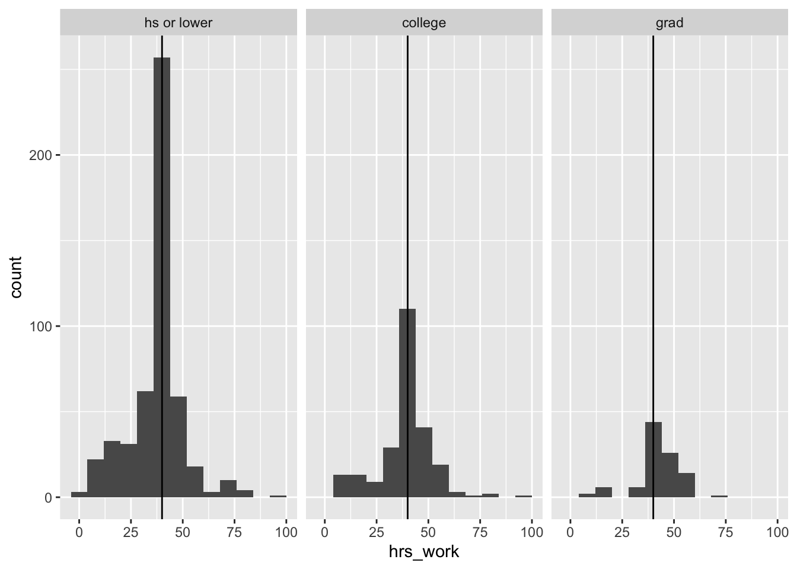
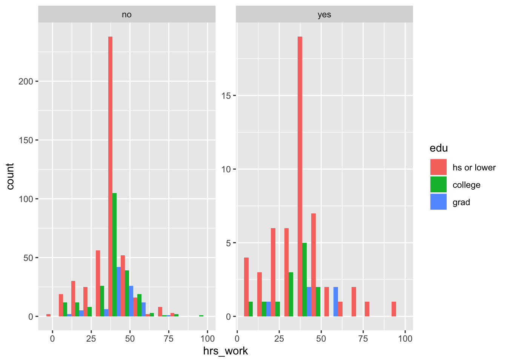

You might have a question that involves three numeric variables–for example, “how does the relationship between hours worked and income vary by age?”
Scatter plots are the natural choice for showing the relationship between two numeric variables. We can add a third numeric variable using size or color.
Here, I am putting hours worked on the x axis (as an explanatory variable), income on the y axis (as a dependent variable), and using color to plot respondent age (also an explanatory variable).
This is the super simple version of this plot. It could be improved by dropping NA values and adding labels.
ggplot(acs12, aes(x = hrs_work, y = income, color = age)) +geom_point()
This is exactly the same plot, but here I’m mapping the age variable using size (and I’m dropping NA values–notice how this changes the age scale to start around 20, rather than 0). This varies the size of the points based on the value of age.
In general, income seems to rise with hours worked, at least up to a point. There doesn’t seem to be a strong relationship with age, though as they are neither of these plots makes that especially easy to determine.
Facets
Here, I’ll show the relationship between education level, hours worked, and ability status, just like we did in lecture. In lecture we did this using a boxplot. Here, I’ll do the same thing using a series of histograms.
The takeaway from this is that there are many ways to show the same information!
I will be using facets–R’s word for smaller subplots–to show how the shape of the hours worked histogram changes across different education levels and ability statuses.
First, let’s temporarily put disability aside and just show the relationship between hours worked and education status using histograms and facets.
acs12 |>filter(employment =="employed") |>#filtering out people who are not employedggplot(aes(x = hrs_work)) +geom_histogram(binwidth =8) +# this additional geom adds a vertical line at 40 hours, where we know everyone's median is# this is not necessary, but it makes it easier to compare distributionsgeom_vline(xintercept =40) +# this facet command tells R that it should actually make several small plots,# one for each value of "edu" (hs or lower, college, grad)facet_wrap(facets ="edu")

Now we have three small plots!
What if we want to also show ability status? One way is to use color.
This time, I will facet by ability status, and use color to show different education levels. I will position the histogram bars next to each other with position = "dodge".
acs12 |>filter(employment =="employed") |>ggplot(aes(x = hrs_work, fill = edu)) +# notice that I added the fill argument heregeom_histogram(binwidth =8, position ="dodge") +# and the position = "dodge" argument herefacet_wrap(facets ="disability", # and I changed this to facet by disability instead of eduscales ="free") # this argument makes it so that the different facets can have different axis limits--useful here because there are many more respondents without disabilities than with disabilities

Q1: Facet practice
Another way to show this same relationship would have been to use color to indicate ability status and facet by education level. Edit the code below to
acs12 |>filter(employment =="employed") |>ggplot(aes(x = hrs_work, fill = edu)) +geom_histogram(binwidth =8, position ="dodge") +facet_wrap(facets ="disability", scales ="free")